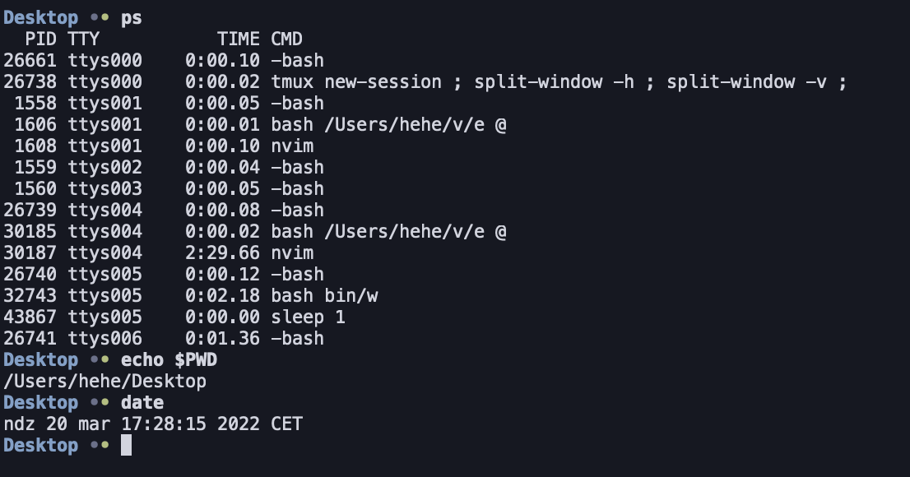
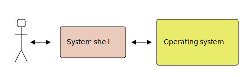
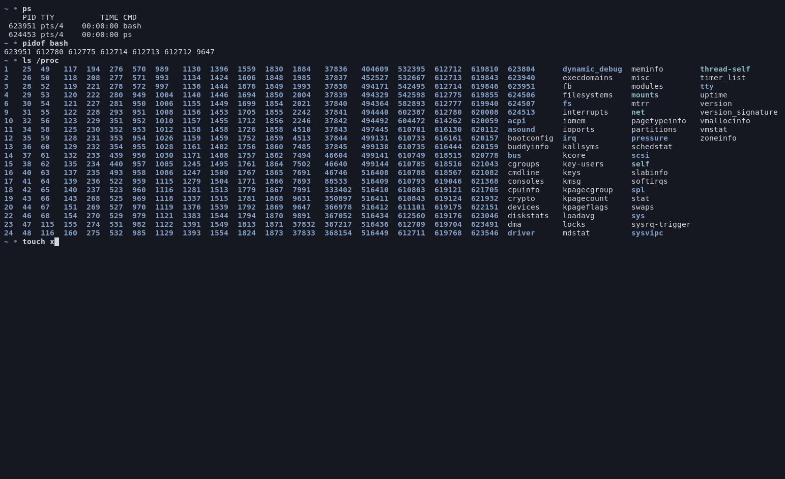
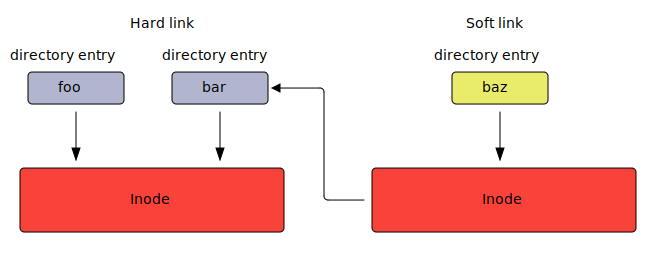
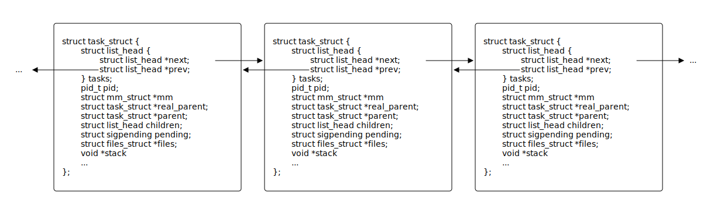
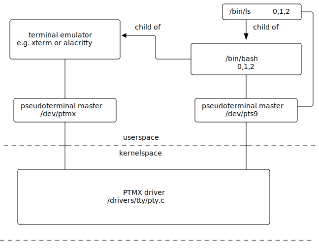
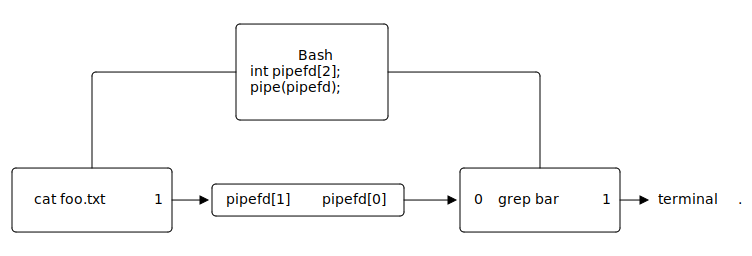
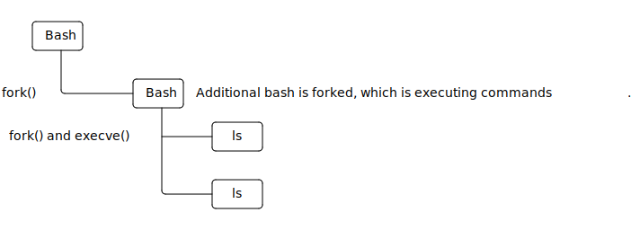
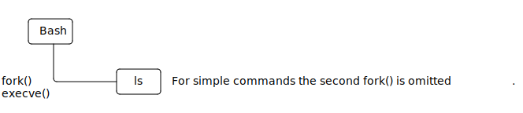

Bash is an Unix shell and command language written for the GNU Project

System shell is a computer program, which acts as an interface between operating system, applications and the user. Using the shell, user can interact with the operating system e.g. run processes, perform operations on files, change system settings etc.

File Explorer is an application, which allows user to open files and run processes. It is an example of a graphical system shell.
The purpose of Xbox dashboard is to run processes (games), therefore it can also be considered as an example of a graphical system shell.
Bash is an example of a command-line shell. Other example of command line shells include i. a. zsh, tcsh, busybox ash and fish shell.

Why in the era of graphical user interfaces and amazing user experiences programmers still work using the “ancient” command line interface?
echo hello world with a “Hello World application” in any GUI framework.Using Bash system shell we can run processes by typing program names.
$ PROGRAM_NAME ARGUMENTS...For example if we want to run a ls program, we can type:
$ ls -l -a /homeExamples of programs that manage files and directories:
$ cat p0 # print p0 to standard output
$ cat p0 p1 p2 # print p0, p1 and p2 to standard output
$ rm x # remove file
$ rm -fr a # remove file or directory "recursively"
$ ls d0 # print a list of files in 'd0' directory
$ ls -a d0 # print a list of files in 'd0' directory including hidden files
$ ls -l d0 # print a more detailed list of files in 'd0' directory
$ mv a b # rename file from 'a' to 'b'
$ cp a b # copy 'a' file to 'b'
$ cp -r a b # copy 'a' directory to 'b' recursively
$ cp a b c d # copy 'a', 'b', 'c' into 'd' directory
$ touch x # change 'x' file timestamps
$ touch -c x # change 'x' file timestamps, but do not create a file
$ mkdir a # create directory name 'a'
$ mkdir -p a/b/c # create 'a/b/c' directory hierarchy
$ rmdir a # remove empty directory
$ ln a b # create hard link named 'b' to 'a'
$ ln -s a b # create soft link named 'b' to 'a'Examples of programs that manage file and directory permissions:
$ chmod 777 f # change 'f' permissions to 777
$ chmod u+x,g+x,o+x # add execute permission to user, group and others
$ chown user a # change owner of 'a' to 'user'
$ chown group:user a # change group to 'gruop' and owner of 'a' to 'user'Examples of programs that manage archives:
$ tar -tf archive.tar.gz # print (t) files in archive (f)
$ tar -xzvf archive.tar.gz # extract (x) .gz (z) archive, verbosely (v)
$ tar -xjvf archive.tar.bz2 -C dir # extract (x) .bz2 (j) archive, verbosely (v) to 'dir'
$ tar -cf archive.tar f1 f2 d0 # create (c) tar archive with files (f) f1 f2 d0
$ tar -cjvpf archive.tar.bz2 f1 f2 # create bz2 (j) verbosely (v), preserving permissions (p)
$ zip x.zip f0 # create 'x.zip' archive containing 'f0' file
$ zip -r x.zip d0 # create 'x.zip' archive containing 'd0' directory
$ unzip x.zip # unzip 'x.zip'
$ unzip -l x.zip # print files in 'x.zip' archiveWe can create symbolic links using ln program.
$ ln target destinationWe can create hard links using ln program and -s option.
$ ln -s target destinationWhat is the difference?
$ ln bar foo$ ln -s bar baz
Download the following archive using wget program.
$ wget czarnota.github.io/data/task-land.tar.gz.tar.gz archive from the directory.All characters (with the exception of a few built-in bash constructs/operators) following the program’s name are interpreted by the program and can influence its behavior.
$ PROGRAM_NAME ARGUMENTS...$ chmod o+w,g+w file$ find . \( -name words -or -name x \) -and -not -executable$ tcpdump -i eth0 ip or arpPrograms can parse options and arguments as they like, but there exists a common convention that most Unix programs follow. This convention is standarised by POSIX.
In the below example, -a is an option, -b barg is an option with an argument barg and arg0 and arg1 are just arguments.
$ prog -a -b barg arg0 arg1 # The 'barg' is an argument to the -b option
$ prog -ab barg arg0 arg1 # You can "glue" options together
$ prog -a -- -b barg arg1 # You can terminate options using --, here -b is an argumentFor example, the below two commands are equivalent:
$ tar -x -z -v -f arch.tar.gz
$ tar -xzvfarch.tar.gzGNU introduced long options (supported using getopt_long() and getopt_long_only() C library functions).
$ prog -ab --option --key=value arg0 arg1 arg2 # getopt_long()
$ prog -option -key arg0 arg1 arg2 # getopt_long_only()Examples of long options:
$ ps --user # getopt_long()
$ ls --all # getopt_long()
$ find . -name x # getopt_long_only()Convention that ps manual page calls a BSD Syntax. It is supported only by a few programs.
$ prog ab arg0 arg1 arg2 # options are: 'a' and 'b', the rest are arguments
$ prog abcdef arg0 arg1 arg2 # options are: 'a', 'b', 'c', the rest are argumentsExamples:
$ ps aux
$ tar xzvf arch.tar.gz
$ tar czf files.tar.gz file1 file2It is important to note that the options and arguments are interpreted by the executed program and not by the shell. For example, if we execute ls:
$ ls -l -a /homeThen the ls program would receive the following arguments in its main() function:
int main(int argc, char **argv)
{
// argv = { "ls", "-l", "-a", "/home" }
// argc = 4
...
}Bash only splits the input line into tokens.
Which commands would you use to create directory called -f, list its contents and then remove it afterwards?
These commands:
$ mkdir -f
$ ls -f
$ rm -fr -fOr these:
$ mkdir "-f"
$ ls "-f"
$ rm -fr "-f"Neither. The quotes "" make no difference to the executed program. It will still see -f in its argument list. We need to use -- to terminate the list of options.
$ mkdir -- "-f"
$ ls -- "-f"
$ rm -fr -- "-f"The find program searches for files and directories. For example to find all files named lib_functions.c starting our search from the current working directory ., we can do:
$ find . -name "lib_functions.c"We can search in a case insensitive mode, also using wildcard patterns. The below example will print all files that start with string host (case insensitive). Also, it will not print any directories (-type f).
$ find / -iname "host*" -type fWe can execute a program on each file with .tmp extension. The below command will remove all .tmp files, but will prompt for confirmation before removal (rm -i):
$ find . -name "*.tmp" -exec rm -i {} \;Download and extract, using the terminal:
https://github.com/simple-icons/archive/develop.zip.svg icons starting with the same letter as your surname into .png files..zip archiveHints:
find - will allow you to execute a program on selected files;inkscape - will allow you to convert .svg to .png;zip - will allow you to create a .zip archive.A process is a program that is being executed.
Program is a list of instructions to be executed (just like a cooking recipe) and a process is an act of executing these instructions (just like cooking).
A process is a program that is being executed. It consists of:
x86_64 these are i. a:
rbp - base of the stack (frame pointer);rsp - stack pointer;rip - program counter;rflags - flags register;rax, rcx, rdx, rbx, rsi, rdi, r8-r15.CR3 register).open());socket(), accept());pipe()).In Linux kernel every process is represented by a struct task_struct.
Below are some fields located in this structure:
struct task_struct {
struct list_head tasks /* An entry on a process list */
pid_t pid; /* Process identifies (PID) */
struct mm_struct *mm /* Process memory */
struct task_struct *real_parent; /* The real parent - the one who called clone() */
struct task_struct *parent; /* Receiver of SIGCHLD i wait4() */
struct list_head children; /* Process' children */
struct sigpending pending; /* List of pending signals */
struct files_struct *files; /* Open file descriptors */
void *stack /* Pointer to kernel stack of the process
- on x86_64 the state of registers is
stored here */
...
};Linux internally keeps a circular list of all processes running in the system.

The ps program can show us all processes, the top program displays processes interactively, the pstree prints a tree of processes and the pseudo file system /proc contains entries representing every process.
$ ps aux$ top$ pstree$ ls /procA primitive system shell could be implemented like this:
while (true) {
char *line = readline("$ ");
char *my_argv[12] = {0};
if (!parse_line(line, my_argv, ARRAY_SIZE(my_argv) - 1))
goto out;
int pid = fork();
if (pid == 0)
execvp(my_argv[0], my_argv);
int status;
waitpid(pid, &status, 0);
report(status);
out:
free(line);
}In ls & command, the & will run the process in the background. It omits the call to waitpid():
while (true) {
char *line = readline("$ ");
char *my_argv[12] = {0};
if (!parse_line(line, my_argv, ARRAY_SIZE(my_argv) - 1))
goto out;
int pid = fork();
if (pid == 0)
execvp(my_argv[0], my_argv);
int status;
if (in_background(line))
status = 0;
else
waitpid(pid, &status, 0);
report(status);
out:
free(line);
}waitpid() and bash is still running, why there are no zombie processes?After all, this is how zombie processes are created.
What are we missing?
waitpid() and bash is still running, why there are no zombie processes?When a child process finishes, the parent is notified with SIGCHLD. Bash calls wait system call in SIGCHLD handler, which allows to read process exit code and remove it from the list of processes.
/* sigchld_handler () flushes at least one of the children that we are
waiting for. It gets run when we have gotten a SIGCHLD signal. */
static sighandler sigchld_handler(int sig) {
int n, oerrno;
oerrno = errno;
REINSTALL_SIGCHLD_HANDLER;
sigchld++;
n = 0;
if (queue_sigchld == 0)
n = waitchld (-1, 0);
errno = oerrno;
SIGRETURN (n);
}The exec command calls one of exec*() system calls, which causes the current process to execute a different program, by replacing the code section of the current process and reinitializing the process memory.
The /usr/bin/sleep simply waits the specified number of seconds.
The questions are:
$ /usr/bin/sleep 5 &
$ exec /usr/bin/sleep 3600$ /usr/bin/sleep 5 & # spawn child
$ exec /usr/bin/sleep 3600 # replace bash with sleep - erases signal handlerAnswers:
sleep does not implement SIGCHLD signal handler.5 seconds, the parent for 3600 seconds. The child will be in zombie state for 3595 seconds.Runs COMMAND, redirects stdout and stderr to files in order to avoid termination from a closed terminal and removes the process identified by PID from the Bash job list, which will prevent Bash from propagating SIGHUP:
$ COMMAND >file 2>file &
$ disown PIDRuns COMMAND, but prevents it from receiving SIGHUP, also redirects the stdin and stdout:
$ nohup COMMAND &Runs process with the help of screen program, which thanks to -d option will disconnect itself from the Bash process:
$ screen -d -m COMMANDwatchExecutes a program periodically, showing output fullscreen.
Show processes periodically:
$ watch ps auxShow memory usage in real time:
$ watch -n0 dftar program so that it would compress the selected directory located in the home directory into ~/archive.tar.gz every minute. The process should not be terminated after closing the terminal.kill program.You can get the PID of the process using ps program or pidof.
Bash is started with 3 file descriptors open, pointing to the terminal, numbered 0, 1 and 2. They are called standard input, standard output and standard error stream.
The cat program will block, waiting for input from 0.
$ catThe echo program will write to 1.
$ echo helloThe ls program will write errors to 2
$ ls --cookies
ls: unrecognized option '--cookies'You can start process with a file descriptor pointing to a file instead of a terminal
Start cat with foo file as standard input
$ cat < foo
barStart echo with foo file as standard output
$ echo bar > foo # will create ovewrite the 'foo' file
$ echo bar >> foo # will append to the `foo` fileStart ls with foo file as standard error stream.
$ ls --cookies 2> fooThe 0, 1 and 2 are just arbitrary numbers. You can open other file descriptors if you want.
Run echo process with file descriptor 5 pointing to foo file.
$ echo bar 5>fooRun read command with file descriptor 13 pointing to foo file and read a line from descriptor 13 into variable bar
$ read -u 13 bar 13< fooYou can run a child process with the standard input pointing to temporary file created by bash with desired contents:
$ cat <<EOF
abcdef
abcdef
EOF
abcdef
abcdef$ ls -l /proc/self/fd <<< "foo"
lr-x------ 64 jane 21 mar 0:18 0 -> /tmp/sh-thd.PCaGIA (deleted)
lrwx------ 64 jane 21 mar 0:18 1 -> /dev/pts/9
lrwx------ 64 jane 21 mar 0:18 2 -> /dev/pts/9You can check the opened file descriptors of a bash process in the following way:
$ ls -l /proc/$(pidof -s bash)/fd
lrwx------ 64 john 20 mar 22:13 0 -> /dev/pts/9
lrwx------ 64 john 20 mar 22:13 1 -> /dev/pts/9
lrwx------ 64 john 20 mar 22:13 2 -> /dev/pts/9
lrwx------ 64 john 20 mar 23:20 255 -> /dev/pts/9As you can see three open file descriptors, stdin (0), stdout (1) and stderr (2), point to /dev/pts/9, which is a pseudoterminal slave.
These are examples of an character device. A character device acts like a regular file, but instead of accessing the hard drive, a different specific functionality will be invoked in the kernel, when you write and read from it.
The terminal emulator opens the /dev/ptmx, creates a pseudoterminal slave /dev/pts/X, forks a child bash process with 0, 1 and 2 file descriptors set to /dev/pts/X.

bash process?In other words how can we open a file directly in bash process?
Is there an equivalent of:
int fd = open("foo.txt", O_RDONLY, 0);?
bash process?You can use exec command.
$ exec 44< foo # calls open("foo", O_RDONLY, 0)
$ read line <&44 # calls read(44, ...)
$ read line <&44 # calls read(44, ...)
$ exec 44<& - # calls close(44)Writing is also possible:
$ exec 44> foo # calls open("foo", O_WRONLY, 0)
$ echo line >&44 # calls write(44, ...)
$ echo line >&44 # calls write(44, ...)
$ exec 44>& - # calls close(44)Try this command:
$ exec 2>&-Then type:
ls<enter>Bash prints its prompt to descriptor 2 (standard error stream). So if we close it, we will see no prompt. But we standard input is still open, and also standard output, so typing ls<enter> is returns the directory listing.
To realize this philosophy we need pipes.
The | operator creates a pipe between 2 processes.
$ cat foo.txt | grep barThe pipe endpoints are connected to descriptor 1 of the first process and 0 of the second process.

Count lines in a file
$ cat file | wc -lReplace ‘small’ with ‘BIG’
$ echo small | sed "s/small/BIG"Remove all .txt files in current working directory and child directories
$ find . -name "*.txt" | xargs -rm -fBelow are programs that are most useful with pipes:
$ wc -l # count number of lines in standard input
$ xargs -n1 CMD # execute CMD for each token from standard input
$ cat # pass everything from standard input to standard output
$ grep pattern # print to standard output only lines that contain 'pattern'
$ sed 's/a/B/' # replace 'a' with 'B'
$ head -n 20 # print first 20 lines
$ tail # print last 20 lines
$ less # view contents of standard input interactively
$ more # view contents of standard input interactively (you can't go back)
$ most # view contents of standard input interactively (you can go sideways)
$ tr x # replace 'x' with 'X'
$ bc # An arbitrary precision calculator
$ yes # Prints 'y' to standard output
$ cut # remove section from each line of files
$ tee # read from standard input and write to standard output and files
$ xclip # copy standard input to clipboardModify your ~/.bashrc so that you can see a live counter of total COVID cases world wide in your prompt. Create a tiny script that will run curl (in background), which will save current cases from the API in the ~/.cases file. Then use cat to display it in the prompt.
curl --location -s --request GET 'https://api.covid19api.com/summary'You can modify your prompt in .bashrc
foo () {
PS1="$(cat ~/.cases) \$"
}
PROMPT_COMMAND=fooYou will most likely need jq to parse .json or maybe grep.
A subshell is a child Bash process, which is spawned to execute a given command. Below you can see example operators that will cause Bash to create a subshell
( )<( )$( )>( )|ls in a subshellWe can check the difference between these 2 commands
$ ls$ (ls)By running strace
$ strace -fe execve,clone bash
$ ls
$ (ls)ls in a subshellThere is no difference:
$ ls
clone(child_stack=NULL, flags=CLONE_CHILD_CLEARTID|CLONE_CHILD_SETTID|SIGCHLD, child_tidptr=0x7f5eea1e1850) = 865843
[pid 865843] execve("/usr/bin/ls", ["ls"], 0x558097fc94b8 /* 76 vars */) = 0
...
$ (ls)
clone(child_stack=NULL, flags=CLONE_CHILD_CLEARTID|CLONE_CHILD_SETTID|SIGCHLD, child_tidptr=0x7f5eea1e1850) = 865860
[pid 865860] execve("/usr/bin/ls", ["ls"], 0x558097fc94d8 /* 76 vars */) = 0
...ls in a subshellBut actually, there is (complex commands):
$ ls; ls
clone(child_stack=NULL, flags=CLONE_CHILD_CLEARTID|CLONE_CHILD_SETTID|SIGCHLD, child_tidptr=0x7f5eea1e1850) = 867887
[pid 867887] execve("/usr/bin/ls", ["ls"], 0x558097fc9528 /* 76 vars */) = 0
clone(child_stack=NULL, flags=CLONE_CHILD_CLEARTID|CLONE_CHILD_SETTID|SIGCHLD, child_tidptr=0x7f5eea1e1850) = 867888
[pid 867888] execve("/usr/bin/ls", ["ls"], 0x558097fc9528 /* 76 vars */) = 0
...
(ls; ls)
clone(child_stack=NULL, flags=CLONE_CHILD_CLEARTID|CLONE_CHILD_SETTID|SIGCHL , child_tidptr=0x7f5eea1e1850) = 867945
[pid 867945] clone(child_stack=NULL, flags=CLONE_CHILD_CLEARTID|CLONE_CHILD_SETTID|SIGCHLD, child_tidptr=0x7f5eea1e1850) = 867946
[pid 867946] execve("/usr/bin/ls", ["ls"], 0x558097fc9528 /* 76 vars */) = 0
[pid 867945] execve("/usr/bin/ls", ["ls"], 0x558097fc9528 /* 76 vars */) = 0
...cdThe cd is not executed normally as a separate process, but with a subshell it is.
$ cd
$ (cd)
clone(child_stack=NULL, flags=CLONE_CHILD_CLEARTID|CLONE_CHILD_SETTID|SIGCHLD, child_tidptr=0x7f5eea1e1850) = 871287
strace: Process 871287 attached
[pid 871287] +++ exited with 0 +++
--- SIGCHLD {si_signo=SIGCHLD, si_code=CLD_EXITED, si_pid=871287, si_uid=1000, si_status=0, si_utime=0, si_stime=0} ---
--- SIGWINCH {si_signo=SIGWINCH, si_code=SI_KERNEL} ---When we call the following command
$ (ls; ls)The following happens:

Bash will omit the second fork() is it is not neccessary.
$ (ls)
Bash omits additional fork(), depending on the use case.
$ (pstree)
systemd─┬─...
├─sshd───sshd───sshd───bash───pstree
$ (:;pstree)
systemd─┬─...
├─sshd───sshd───sshd───bash───bash───pstree
$ bash -c 'pstree'
systemd─┬─...
├─sshd───sshd───sshd───bash───pstree
$ echo pstree | bash
systemd─┬─...
├─sshd───sshd───sshd───bash───bash───pstree<()The <() operator works by running a command specified in brackets and inserts a temporary named pipe in their place.
You can see the result is a named pipe:
$ ls -l <(echo)For example to find bash in ps output:
$ grep bash <(ps)Or if you want to execute a script located at url
$ bash <(curl -s https://raw.githubusercontent.com/czarnota/bash-snake/master/snake)$()Captures the standard output of the command in brackets and “expands” it into the shell
Install linux headers for current linux version:
$ sudo apt install linux-headers-$(uname -r)Kill vim, by looking up its PID using pidof:
$ kill $(pidof vim)Save list of files in files variable
files="$(ls -a)"The read command reads standard input and places it in var variable. So var should contain hello, but it doesn’t?
$ echo hello | read var
$ echo "hello:$var"
hello:The echo hello | read var is executed in a subshell. Execute the following commands to confirm:
$ strace -f -e fork,execve,clone bash
$ echo hello > var_value
$ read var < var_value
$ echo "hello:$var"
hello:hello
$ cat var_value | read var2 # read is done in a subshell
$ echo $var2So there is a difference between these 2 commands:
read x < <(echo y)echo y | read xhttp://github.com/symfony/symfony.php file has the following copyright (c) Fabien Potencier <fabien@symfony.com> (c) Fabien Potencier <fabien@symfony.com>
(c) Your Name <yourname@example.com>You may need to use sed -i and grep -R -l.
*The * operator matches any charaters.
The shell will replace the pattern with all files that match it.
Examples:
$ mv *.txt dest$ echo *$ tar -czffiles.tar.gz *$ rm -fr *.o?The ? operator matches a single character.
The shell will replace the pattern with all files that match it.
Examples:
$ mv *.??? dest$ rm *.?o$ tar -czffiles.tar.gz ??????[]The [] operator matches a single matching character from the set.
The shell will replace the pattern with all files that match it.
$ echo a[bczd]$ cp *.[mp3tx][mp3tx][mp3tx]$ rm [a-z]{..}The {} operator expands to numbers or characters of the specified range.
$ echo {1..10}$ rm {1..10}{1..10}$ touch {0..9}{a..z}{,}You can manually specify elements of the range, by specifying elements and separating them by a comma:
$ mv path/to/{file1,file2}$ mv path/to/file1.txt{,.bak}$ touch path/to/{przemek,mike,tom}{1..10}~The ~ expands to user’s home firectory:
$ echo ~/directory
/home/john/directoryThis works the same as $HOME variable:
$ echo $HOME/directory
/home/john/directoryYou can disable the expansion using "":
$ echo "~/directory"
~/directoryYou can download an article about a day from Wikipedia in .pdf format from this link:
https://en.Wikipedia.org/api/rest_v1/page/pdf/April_26.pdf suffix..zip archive.||Executes a command only if the first command fails.
Print not found, if there is no line in file containing hello:
$ grep hello file || echo not foundDownload file1, if it fails download file2
$ wget http://a.com/file1 || wget http://b.com/file2&&Executes a command only if the first command succeeds
Print found, if there is a line in file containing hello:
$ grep hello file && echo foundRemove file and if it was removed successfully, then create it again:
$ rm file && touch fileExtract f.tar.gz archive only if it was downloaaded successfully
$ wget http://x.com/f.tar.gz && tar -czvf f.tar.gzWhat will be printed in the following scenario:
$ echo 1 || echo 2 && echo 3The result is:
$ echo 1 || echo 2 && echo 3
1
3Although the boolean logic would suggest the following order:
$ echo 1 || ( echo 2 && echo 3 )The actual order is always left to right:
$ ( ( echo 1 || echo 2 ) && echo 3 )A simple hello world script in Bash looks like this:
#!/usr/bin/env bash
echo Hello WorldTo execute it you need to set executable permissions
$ chmod u+x script.shYou can execute it by specifying path to it:
$ ./script.sh
Hello WorldYou can make Bash execute the commands in a script file, without spawning a child process using source command or . command.
$ source s
$ . sExecuting script normally cause a child process to be created:
$ ./x
clone(child_stack=NULL, flags=CLONE_CHILD_CLEARTID|CLONE_CHILD_SETTID|SIGCHLD, child_tidptr=0x7f7dd70a4890) = 29863
strace: Process 29863 attached
[pid 29863] execve("./x", ["./x"], 0x55c9d60a31a8 /* 50 vars */) = -1 EACCES (Permission denied)
sh: 13: ./x: Permission denied
[pid 29863] +++ exited with 126 +++
--- SIGCHLD {si_signo=SIGCHLD, si_code=CLD_EXITED, si_pid=29863, si_uid=11672137, si_status=126, si_utime=0, si_stime=0} ---
$ --- SIGWINCH {si_signo=SIGWINCH, si_code=SI_KERNEL} ---The name of the script is passed as a first argument to the program indicated by shebang.
#!/bin/bashFor example, below is a script, which will remove itself upon execution.
#!/bin/rmBash scripting language supports variables. You can set a variable by assigning a value to it.
variable0=value
variable0="value"To access a variable you can use the $ sign.
echo $variable0
echo ${variable}
echo "$variable"When accessing variables "" make a difference.
file="-fr /"
rm $file # rm "-fr" "/"
rm "$file" # rm "-fr /"By default all variables are accessible only to a process in which they were set. To make them available to child processes you must use export command:
var=x
export var
./prog # prog will see the varYou can export and set variable in one line:
export var=x
./progYou can create a variable only for the child process:
var=x ./progThe visudo program used the text editor specified in EDITOR environment variable
EDITOR=nano visudoThe make program passes environment variables to Makefiles. For example you can set a compiler using CC variable or compiler flags using CFLAGS variable (if Makefile uses them)
CC=clang CFLAGS=-g makeBelow are examples of variables, which are likely available in your environment
$ echo $USER # current username
$ echo $PWD # current working directory
$ echo $RANDOM # random number
$ echo $PATH # current program search path
$ echo $SHELL # path to shell program
$ echo $OLDPWD # previous directory
$ echo $EDITOR # preferred editor
$ echo $HOME # home directoryWhat is about to happen in the below scenarios?
A=B
A = B
A= B
A=Mary Had a Little Lamb
A="Mary Had a Little Lamb"
B="$A" A="$B"
B="A" A="$B"
A=B=C
A=B B=CBelow is the explanation
A=B # Variable 'A' will have a value of 'B'
A = B # Run 'A' program with '=' and 'B' as arguments
A= B # Run 'B' program with 'A' set to ''
A=Mary Had a Little Lamb # Run 'Had' program with A='Mary'
A="Mary Had a Little Lamb" # Setting 'A' to 'Mery had a Little Lamb'
B="$A" A="$B" # Setting 'B' to '' and 'A' to ''
B="A" A="$B" # Setting 'B' to 'B' and 'A' to 'A'
A=B=C # Setting 'A' to 'B=C'
A=B B=C # Setting 'A' to 'B' and 'B' to 'C'Every variable is a string by default.
hello=worldNumbers are also considered a string. The below statements are identical:
x=1
x="1"You can quote contents with "" and '' to allow for whitespace
hello="world world"
hello='world world'You can declare variable as integer using declare -i This changes the behavior of + operator. Compare the below example:
$ declare -i x=1
$ x=1+1
$ echo $x
2
$ x+=1
3$ declare x=1
$ x=1+1
$ echo $x
1+1
$ x+=1
1+11Bash supports array. You can declare them in the following way:
x=(foo bar baz)Set and get an array element
x[1]=bar
echo "${x[1]}"Append elements
x+=(a b c d)You can also declare an array of integers using declare -ai x=(1 2 3).
@ vs *x=("john smith" "mark thomson" "daniel neville")You can use @ and * operators to get all elements. Below is the difference between them:
${x[@]} # expands to: john smith mark thomson daniel neville
${x[*]} # expands to: john smith mask thomson daniel neville
"${x[@]}" # expands to: "john smith" "mark thomson" "daniel neville"
"${x[*]}" # expands to: "john smith mark thomson daniel neville"Most of the time you probably need "${x[@]}", because it expands into same number of tokens as there are elements.
You can also count number of array items using #:
${#x[@]}Declaring an associative array
declare -A x=(
[foo]=bar
[bar]=baz
)Assigning an element to an associative array
x[foobar]=1Accessing all elements and all keys
$ echo "${x[@]}"
bar baz 1
$ echo "${!x[@]}"
foo bar foobarBash supports if conditional statement.
if COMMAND; then
COMMANDS
elif COMMAND; then
COMMANDS
else
COMMANDS
fiIf a COMMAND is successful then it will execute an if branch, otherwise it will fallback to else branch. The below example code checks if john is present in /etc/passwd file.
if grep -q john /etc/passwd; then
echo User exists
else
echo User does not exist
fitrue and false programsThe true is not a built-in value, instead it is implemented as program.
if true; then
echo always visible
fiSame goes for false:
if false; then
echo never visible
fiYou can negate a condition using !
if ! false; then echo always visible; fiThe /usr/bin/test program allows can check conditions. For example to check if x variable equals 1:
if test "$x" -eq 1; then
echo x is 1
fiChecking if x is less than one
if test "$x" -lt 1; then echo x is less than 1; fiChecking if x is not empty and equals "foo"
if test -n "$x" -a "$x" == foo; then echo pass; fiMore information is provided in man test.
/usr/bin/[The test is aliased as /usr/bin/[. Invoking it in such way requires to pass ] as the last argument. The whole construct resembles an if statement from other programming languages:
if [ "$x" -eq 1 ]; then
echo x is 1
fiChecking if x is less than one
if [ "$x" -lt 1 ]; then echo x is less than 1; fiChecking if x is not empty and equals "foo"
if [ -n "$x" -a "$x" == "foo" ]; then echo pass; fi[[The operator [[ introduces some syntactic sugar and allows you to safely omit quoting of the variables.
if [[ $x -eq 1 ]]; then # [ $x -eq 1 ] would not work without quotes is $x was empty
echo x is 1
fiChecking if x is less than one
if [[ $x -lt 1 ]]; then echo x is less than 1; fiChecking if x is not empty and equals "foo"
if [[ -n "$x" && "$x" == "foo" ]]; then echo pass; fiIt is not standarized by POSIX, if portability is required use [
Why this prints true?
$ [[ 1 < 11 ]] && echo true || echo false
trueAnd this prints false?
$ [[ 2 < 11 ]] && echo true || echo false
falseThe below check lexicographical order.
$ [[ 1 < 11 ]] && echo true || echo false
true
$ [[ 2 < 11 ]] && echo true || echo false
falseTo check numeric order we still need to use
$ [[ 1 -lt 11 ]] && echo true || echo false
true
$ [[ 2 -lt 11 ]] && echo true || echo false
trueTo check if variable value starts with foo, you can:
[[ $x = foo* ]]Checking if variable value ends with an even number:
[[ $x = *[02468] ]]Checking if variable value consists of 5 characters:
[[ $x = ????? ]]More information in Bash man page man bash | grep -E "Pattern Matching$" -A 45
In addition to Pattern Matching, Bash supports also the Extended Regular Expressions:
[[ $x =~ ^foo.* ]]Checking if variable value ends with an even number:
[[ $x =~ [02468]$ ]]Checking if variable value consists of 5 characters:
[[ $x =~ ^.....$ ]]Evaluating an arithmetic expressions using (()) operator:
$ b=1
$ ((a = b + 20 / 10))
$ echo $a
2Incrementing a variable:
((i++))Obtaining an expression value using $(())
$ a="$((1 + 1))"
$ echo $((a + 2))
4There are multiple ways of evaluating arithmetic operations. Additionally to the (()) and $(()) there are:
The let built-in:
let "x = a + b"The deprecated $[] operator:
x=$[a + b]The $(()) should be preferred if portability is required, because it is standarized by POSIX.
Create script that will convert decimals to hexadecimals and hexadecimals to decimal.
Example usage:
$ ./conv 0xA
10
$ ./conv 10
0xAYou will most likely need:
echo $((...))printf$1if[[ ... ]] or grepIn some cases instead of checking all possible failure cases, you can attempt to execute a command and react to an error.
Asking for permission:
if [ -r "f.txt" ]; then
cat f.txt
else
echo f is not readable
fiAsking for forgiveness:
if ! cat f.txt 2> /dev/null; then
echo f is not readable
fiBash supports while loop
while COMMANDS; do
COMMANDS
doneExample: running ping until it succeeds
while ! ping -c1 10.0.0.1; do
echo "Timeout. Retrying..."
doneBash supports until loop
until COMMANDS; do
COMMANDS
doneExample: running ping until it succeeds
until ping -c1 10.0.0.1; do
echo "Timeout. Retrying..."
doneThere is a case statement
case VALUE in
PATTERN1) COMMANDS ;;
PATTERN2) COMMANDS ;;
...
*) COMMANDS ;;
esacExample:
read -p"Place and order: " order
case "$order" in
fish) echo "enjoy your fish" ;;
pizza) echo "enjoy your pizza" ;;
pasta) echo "enjoy your pasta" ;;
*) echo "sorry, we do not have it" ;;
esacfor ... in ... loopThe for loop takes a form of:
for VAR in TOKEN1 TOKEN2 ... TOKENN; do
COMMANDS
donePrint numbers from 1 to 5
for i in 1 2 3 4 5; do
echo "$i"
doneDo the same using seq
for i in $(seq 1 5); do echo "$i"; donefor ... in ... loop - more examples# This will print `1 2 3 4 5` once:
for i in "$(seq 1 5)"; do
echo "$i";
done
# DIY version of `ls`
for i in *; do
echo "$i"
done
# Iterate over script arguments
for i; do
echo "$i"
done
# Generate emails
for email in {john,jane,anna}@example.com; do
echo "$email"
donefor (()) loopThere is another version of for loop which is similat to for loop from C language.
for (( expr1; expr2; expr3 )); do
COMMANDS
donePrint numbers from 0 to 9.
for ((i = 0; i < 10; ++i)); do
echo "$i"
donePrint all powers of 2.
for ((i = 1; i > 0; <<= i)); do echo "$i"; doneDo-it-yourself version of /usr/bin/yes:
while true; do
echo y
done | sudo apt install $PACKAGESPing every hostname in /etc/hosts:
cat /etc/hosts | while read ip hostname; do
ping -c1 "$ip" 2>/dev/null
doneCreate a script called new, which will create files from templates located in ~/.new directory.
You can find templates at https://github.com/leachim6/hello-world
When user executes new it should list available “templates”, which are stored in ~/.new directory and ask the user which “template” to use for a new file.
Example usage:
$ ./new
1) main.cpp
2) main.c
3) main.py
choose: 2
$ ls
main.cYou can display a simple menu using echo and a loop or you optionally you can use fzf program.
Create an interactive program which continuously reads system clipboard and generates the QR code based on its contents.
You may need use the following features and programs:
while - main program loopsleep - to pause execution for a momentqrencode -t UTF8 - to generate QR codexclip - to access the clipboardclear - to clear the screenYou can access arguments passed to a script using ${N} variable, where N is N-th argument passed to a script. For example the ./script:
$ ./script a b cWill receive the following arguments:
#!/usr/bin/env bash
echo $0 # ./script
echo $1 # a
echo $2 # b
echo $3 # c
echo "$*" # "a b c"
echo "$@" # "a" "b" "c"
echo "$#" # 3To access 10-th argument you need to use ${10}.
getopts built-inThe getopts build-in allows you to support POSIX short options, like -a or -b. For example to support ./program -a -b -c -d arg -e a b c we can use the following loop:
while getopts ":abcd:e" option; do
case "$option" in
a) opt_a=1 ;;
b) opt_b=1 ;;
c) opt_c=1 ;;
d) opt_d="$OPTARG" ;;
e) opt_e=1 ;;
:) echo "-$OPTARG requieres an argument" 1>&2 ;;
\?) echo "-$OPTARG doesn't exist" 1>&2 ;;
*) echo "unsuppoerted option $option" 1>&2 ;;
esac
done
shift $((OPTIND - 1))After getopts is executed once, the next argument number that will be processed is stored in $OPTIND. This is why at the end of the above loop, we do shift $((OPTIND - 1)) to remove the arguments that are already parsed.
Long options must be implemented manually. Below is an example for ./program --alfa --gamma ARG. The example is not complete because it does not support --gamma=ARG.
while true; do
arg="$1"
case "$arg" in
-a|--alfa)
shift || break;
opt_alfa=1 ;;
-g|--gamma)
shift || break;
opt_gamma="$1"
if ! shift; then
echo "$arg requires and argument" 1>&2; break
fi
;;
-*) echo "unrecognized option: $arg" 1>&2; break ;;
*) break ;;
esac
doneCreate script that is invoked as ./install-ssh-key HOST and will copy your public key to HOST machine. If the public key does not exist it will run ssh-keygen and generate it.
$ ./install-ssh-key login@10.0.0.1After running the program it should be possible to login without password
$ ssh login@10.0.0.1Then extend the script to work for multiple machines
$ ./install-ssh-key login@10.0.0.1 login@10.0.0.2Create a script named repeat, which will execute given command as many times as specified with -n parameter
$ ./repeat -n 3 echo foo bar baz
foo bar baz
foo bar baz
foo bar bazVery important: arguments must be correctly processed. This should create single file "x y z" 3 times:
$ ./repeat -t 3 touch "x y z"
$ ls
"x y z"Create a script called tarpack, which accepts a .tar.gz archive as a first argument and produces a script (name as a second argument), which will act as a “self-extracting” archive.
We should be able turn an archive into a script, then remove the archive.
$ ./tarpack archive.tar.gz foo.sh
$ rm archive.tar.gzAnd finally unpack the archive:
$ ./foo.shYou may need:
base64Create a script that will look for files, which name contains the string passed as the first argument. The script will print a choice menu with matched files. After the user selects an option, the script will open the selected file in the editor specified by $EDITOR environment variable. If variable is not specified it should fall back to vi
$ EDITOR=name f foo
1) foobar
2) barfoo
3) afoo
choice: 2In Bash functions are declared by specifying their name followed by ()
function_name () {
COMMANDS
return EXIT_CODE
}There is also an alternate syntax that is equivalent to the previous one.
function function_name {
COMMANDS
return EXIT_CODE
}You can call a function by specifying its name:
function_nameBy default a function is executed within the same bash process. We can however call a function in a subshell.
(function_name)Alternatively we can define a function using ( ) brackets instead of { }. This way the function will always be called in a subshell.
function () (
COMMANDS
return EXIT_CODE
)function_nameA function, just like a script can accept arguments. You can access them using same variables as in the case of script arguments.
#!/usr/bin/env bash
foo () {
echo $1 $2 $3 # a b c
echo "$*" # "a b c"
echo "$@" # "a" "b" "c"
echo $# # 3
echo $0 # program_name (not function name)
}Calling function with arguments:
foo a b cA local variable can be declared using local.
#!/bin/bash
foo () {
local x
x=1
y=1
echo "$x"
}
x=2
y=2
foo
echo $x # prints 2
echo $y # prints 1Instead of local you can also use declare. If declare is used in function scope then it creates local variable. To create global variable from the scope of function you need to use declare -g. There is also readonly, but it behaves like declare -gr (variable will not be local).
a () { echo "$var" }
b () { local var="local value"; a; }
var="global value"
a # outputs ???
b # outputs ???Bash uses dynamic scoping. The value of var in child is not determined by where child is defined, but by where it is called. If there is no local definition in the body of child, the next place the shell looks is in the body of the function from which child is called, and so forth. The local modifier creates a variable in a function that is local to that call, so it does not affect the value of the variable from any enclosing scopes. It is, though, visible to any enclosed scope (https://stackoverflow.com/a/40659060).
a () { echo "$var" }
b () { local var="local value"; a; }
var="global value"
a # outputs "global valaue"
b # outputs "local value"It is a good practive to assign arguments to variables, to document their meaning.
#!/usr/bin/env bash
introduce () {
local name="$1";
local surname="$2"
local age="$3"
echo "$name $surname $age"
}
introduce Przemysław Czarnota 29Problems with this approach:
To overcome the mentioned problems, we can improve the argument handling
#!/usr/bin/env bash
introduce () {
local name="$1"; shift || return
local surname="$1"; shift || return
local age="${1-not disclosed}"; shift || true # optional arguments
echo "$name $surname $age"
}
introduce Przemysław Czarnota 29The functions receive standard input and print to standard output.
For example the tr command will receive the same standard input that was passed to the function and will print to the same standard output that was set for the function
to_lower () {
tr '[[:upper:]]' '[[:lower:]]'
}
echo Przemek | to_lowerResults in:
przemekCreate script ./bookmarks.sh and source it in your ~/.bashrc. The ./bookmarks.sh should define a function called goto, which allows the user to navigate and create bookmarks.
# Save current working directory as a new bookmark under the same name as directory
$ goto +
#Same as the above but the bookmark will be called `foo`
$ goto + foo
# Change directory `cd` to the `foo` bookmark
$ goto foo
# Should return an errorcode and print a message to standard error
# that the 'asd' bookmark does not exist
$ goto asd
# List all bookmarks
$ gotoBookmarks can be implemented as symbolic links in the ~/.goto directory.